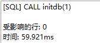
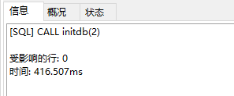

mysql-1 往mysql灌入一百万数据
平时，如果只能接触到少量的数据的话，对于自己的成长是非常不利的，而且也没有大数据下处理的优化相关经验，那么既然没有大量的实际数据，我们自己创建大量的数据，那么在这一节当中，将利用mysql的存储过程往数据库中插入100万数据，带你了解直接使用mysql插入大量的数据。
存储过程
什么是存储过程
其实，我们常用的数据库语言dml，ddl在执行的时候都是需要先编译然后再执行，而存储过程就是为了完成特定功能的sql语句集合，经编译后存储在数据库中，用户通过制定存储过程的名字并且可以给定参数来调用执行它，调用方式就像我们使用php语言调用函数一样。
存储过程优点
- 因为它可以使用类似php语言的控制语句，增强了sql的功能性和灵活性
- 可以重复使用
- 可以作为安全机制来利用，避免非授权用户对数句的访问
语法
参数的定义
创建存储过程的时候类似我们创建一个函数，具体语法如下:
CREATE PROCEDURE([[IN |OUT |INOUT ] 参数名 数据类形…]),可接收的参数类型有三种
- IN 输入参数:表示该参数的值必须在调用存储过程时指定，在存储过程中修改该参数的值不能被返回，为默认值
例子:
CREATE PROCEDURE demo_in_parameter(IN p_in int)
BEGIN
SELECT p_in;
SET p_in=2;
SELECT p_in;
END;
执行:
SET @p_in=1;
CALL demo_in_parameter(@p_in);
执行结果:
+——+
| p_in |
+——+
| 1 |
+——+
+——+
| p_in |
+——+
| 2 |
+——+
再执行
SELECT @p_in;
返回:
+——-+
| @p_in |
+——-+
| 1 |
+——-+
以上可以看出，p_in虽然在存储过程中被修改，但并不影响@p_id的值 - OUT 输出参数:该值可在存储过程内部被改变，并可返回
例子:
CREATE PROCEDURE demo_in_parameter(OUT p_in int)
BEGIN
SELECT p_in;
SET p_in=2;
SELECT p_in;
END;
执行:
SET @p_in=1;
CALL demo_in_parameter(@p_in);
执行结果:
+——+
| p_in |
+——+
| 1 |
+——+
+——+
| p_in |
+——+
| 2 |
+——+
再执行
SELECT @p_in;
返回:
+——-+
| @p_in |
+——-+
| 2 |
+——-+
以上可以看出，p_in在存储过程中被修改， @p_in也被修改了 - INOUT 输入输出参数:调用时指定，并且可被改变和返回
变量
变量定义
DECLARE variable_name [,variable_name…] datatype [DEFAULT value];
如: DECLARE l_int int unsigned default 4000000;
变量赋值
SET 变量名 = 表达式值
用户变量
①用户变量名一般以@开头
②滥用用户变量会导致程序难以理解及管理
存储过程的删查改
查:
show procedure status where db=’数据库名’;
查看存储过程的详细:
SHOW CREATE PROCEDURE 数据库.存储过程名;
删:
DROP PROCEDURE
改:
ALTER PROCEDURE
控制语句
条件语句
1 | if-then -else语句 |
case语句
1 |
|
编写存储过程
CREATE PROCEDURE demo_in_parameter(IN t int)
BEGIN
#Routine body goes here...
set @num=1;
WHILE @num<1000000 DO
if t=1 THEN
INSERT INTO user_sys(user_name,user_pwd)VALUES(CONCAT('user',@num),'123');
SET @num=@num+1;
ELSE
INSERT INTO user_sys2(user_name,user_pwd)VALUES(CONCAT('user',@num),'123');
SET @num=@num+1;
END IF;
END WHILE;
END
执行调用
调用引擎为MyISAM
CALL initdb(1)执行时间:
调用引擎为InnoDB
CALL initdb(2)
总结:
Innodb引擎支持事务，MyISAM写入数据的性能比较好